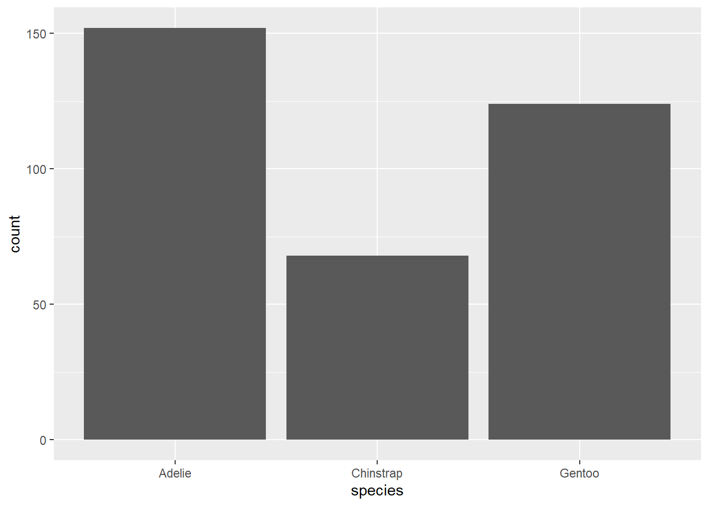

Take a look at some graphs of data for your field of interest. You may have a look at papers you have recently read or graphs you find in textbooks or assignments. Consider what you like or don’t like about these graphs. What looks good and/or makes a graph easy to interpret? What doesn’t? Making figures is both an art and a science.
To learn more about what makes graphs good (or bad), read Chapter 1 of Kieran Healy’s online data visualization book –> What makes figures bad?
Making nice looking graphs is a key feature of R and of data science in general. The best way to do this in R is through use of the ggplot2 package. This package is the most user friendly and flexible way to make nice plots in R. Notably, ggplot2 is a package that is contained within the tidyverse package, which is more of a style of R usage than a package. So, let’s load tidyverse and a few other useful packages for today.
ggplot2 is the preferred graphics package for most R users. It allows users to build a graph piece by piece from your own data through mapping of aesthetics. It is much easier to make pretty (publication and presentation quality) plots with ggplot2 than it is with the base plot function in R. If you prefer base plot() that is ok. You can use whatever you’d like but when we talk about graphs we will be using the language of ggplot.
Attached here are the Tidyverse Cheat Sheets for ggplot2
The ggplot() function is the base of the ggplot2 package. Using it creates the space that we use to build a graph. If we run just the ggplot() function we will get a gray rectangle. This is the space (and background) of our plot!
ggplot()
To build a plot on the background, we must add to the ggplot call. First, we need to tell it what data to use. Next, we need to tell it where in the data frame to pull data from to build the axes and data points. The part of the ggplot() function we use to build a graph is called aes() or aesthetics.
Here is an example using penguins: I am telling ggplot that the data we are using is ‘penguins’ and then defining the x and y axis in the aes() call with column names from penguins
head(penguins)
# A tibble: 6 × 8
species island bill_length_mm bill_depth_mm flipper_l…¹ body_…² sex year
<fct> <fct> <dbl> <dbl> <int> <int> <fct> <int>
1 Adelie Torgersen 39.1 18.7 181 3750 male 2007
2 Adelie Torgersen 39.5 17.4 186 3800 fema… 2007
3 Adelie Torgersen 40.3 18 195 3250 fema… 2007
4 Adelie Torgersen NA NA NA NA <NA> 2007
5 Adelie Torgersen 36.7 19.3 193 3450 fema… 2007
6 Adelie Torgersen 39.3 20.6 190 3650 male 2007
# … with abbreviated variable names ¹flipper_length_mm, ²body_mass_g
Before we get too excited about making perfect graphs, let’s take a look at the types of graphs we have available to us…
Histograms are used to explore the frequency distribution of a single variable. We can check for normality (a bell curve) using this feature. We can also look for means, skewed data, and other trends.
A boxplot is a really useful plot to assess median and range of data. It can also identify outliers! The defaults for a boxplot in ggplot produce a median and interquartile range (IQR). The 1st quartile is the bottom of the box and the 3rd quartile is the top. The whiskers show the spread of the data where the ends of the whiskers represent the data points that are the furthest from the median in either direction. Notably, if a data point is 1.5 * IQR from the box (either the 1st or 3rd quartile) it is an outlier. Outliers are excluded from whiskers and are presented as points. There
We can use geom_violin to combine boxplot with a density plot (similar to a histogram) Here we can see the distribution of values within bill length by species.
We can make bar graphs in ggplot using geom_bar(). There are some tricks to getting bar graphs to work exactly right, which I will try to detail below. NOTE Bar graphs are very rarely useful. If we want to show means, why not just use points + error bars? What does the bar actually represent? There aren’t that many cases where we really need bar graphs. There are exceptions, like when we have a population and we want to see the demographics of that population by count or percentage (see example below)
Here is a simple bar chart.
ggplot(data=penguins, aes(species)) +geom_bar()

Here is a more elaborate boxplot that shows species breakdown by island! Note that we use an aes() call within geom_bar to define a fill. That means fill by species, or add a color for each species.
We learned when the best (only) times to use bar graphs are. Do you remember what those were? Are the examples above representative of that?
A line graph can be extremely useful, especially if we are looking at time series data or rates!
Here is an example of CO2 uptake vs concentration in plants. Each color represents a different plant. NOTE: the dataset called ‘CO2’ is built into R, so we can just use it without loading anything :)
We can change the aesthetics of the lines using color, linetype, size, etc. Here I am changing the linetype based on the plant species and increasing the size of ALL lines to 2. This is a good example of how aes() works. Anything within the aes() call is conditional. That means, I give it a name (such as a column or variable name) and it changes based on that column or variable. To change an aesthetic across all lines, points, etc, I just put the code outside of the aes(). As I did for size. That makes the size of ALL lines = 2.
Importantly, we can use the data= and aes() calls within geom_point() or any other geom instead of within ggplot() if needed. Why might this be important?
We often want to present means and error in our visualizations. This can be done through the use of geom_boxplot() or through combining geom_point() with geom_errorbar()
Here is an example of the later…
#First, we need to calculate a mean bill length for our penguins by species and islandsumpens<- penguins %>%group_by(species, island) %>%na.omit() %>%#removes rows with NA values (a few rows may otherwise have NA due to sampling error in the field)summarize(meanbill=mean(bill_length_mm), sd=sd(bill_length_mm), n=n(), se=sd/sqrt(n))sumpens
# A tibble: 5 × 6
# Groups: species [3]
species island meanbill sd n se
<fct> <fct> <dbl> <dbl> <int> <dbl>
1 Adelie Biscoe 39.0 2.48 44 0.374
2 Adelie Dream 38.5 2.48 55 0.335
3 Adelie Torgersen 39.0 3.03 47 0.442
4 Chinstrap Dream 48.8 3.34 68 0.405
5 Gentoo Biscoe 47.6 3.11 119 0.285
# Now we can plot! ggplot(data=sumpens, aes(x=species, y=meanbill, color=island))+geom_point()+geom_errorbar(data=sumpens, aes(x=species, ymin=meanbill-se, ymax=meanbill+se), width=0.2)
And if we want to be extra fancy (and rigorous), we can plot the raw data behind the mean+error This is considered a graphical best practice as we can see the mean, error, and the true spread of the data!
ggplot()+geom_jitter(data= penguins, aes(x=species, y=bill_length_mm, color=island), alpha=0.5, width=0.2)+#this is the raw datageom_point(data=sumpens, aes(x=species, y=meanbill, color=island), size=3)+#this is the averagesgeom_errorbar(data=sumpens, aes(x=species, ymin=meanbill-se, ymax=meanbill+se), width=0.1)
An alternative to geom_jitter, which doesn’t always work, is to use geom_point but force the points to not overlap with position_dodge. Here is an example
#first we should define the distance of our position_dodgepd<-position_dodge(width=0.2)ggplot(data=sumpens, aes(x=species, y=meanbill, color=island))+geom_point(data= penguins, aes(x=species, y=bill_length_mm, color=island), alpha=0.2, width=0.2, position=pd)+#raw datageom_point(size=3, position=pd)+#averagesgeom_errorbar(aes(ymin=meanbill-se, ymax=meanbill+se), width=0.2, position=pd)
Warning in geom_point(data = penguins, aes(x = species, y = bill_length_mm, :
Ignoring unknown parameters: `width`
This code will produce the same graph as above. Note that in geom_jitter we just replaced width = with position =
ggplot(sumpens, aes(x=species, y= meanbill, color=island))+geom_jitter(data= penguins, aes(x=species, y=bill_length_mm, color=island), alpha=0.5, position=pd)+#this is the raw datageom_point(size=3,position=pd)+#this is the averagesgeom_errorbar(aes(ymin=meanbill-se, ymax=meanbill+se), width=0.2, position=pd)